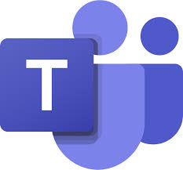

Вбудований в чат Copilot
- 
Вбудований в чат Copilot
Copilot у Microsoft Teams покращує співпрацю та допомагає максимально ефективно використовувати чати й наради Teams. Швидко підбивайте підсумки, визначайте подальші завдання, створюйте порядок денний і ставте запитання для більш ефективних і зосереджених нарад. Підсумовуйте ключові висновки, переглядайте, що пропустили, і виділяйте ключових учасників у розмовах чатів, куди вас додали. Усе це – без перерв у обговоренні.
Copilot у Teams використовує вміст ваших чатів і нарад Teams, щоб створювати аналітичні дані й дієві підказки включно з найважливішими точками дотику Teams.
Copilot на нарадах і викликах Teams допомагає записувати інтерактивні елементи, різні точки зору за темою, а також невирішені запитання. Ви навіть можете попросити Copilot надати вам відповідь у формі таблиці, згенерувавши розмічену таблицю, готову для копіювання та надання спільного доступу.

Онлайн зустрічі та гнучке керування
Онлайн зустрічі та гнучке керування
У сучасному світі, де дистанційна робота стає все більш поширеною, онлайн зустрічі відіграють ключову роль у підтримці ефективної комунікації та співпраці. Microsoft Teams є однією з найпопулярніших платформ для проведення онлайн зустрічей та керування командами завдяки своїм широким можливостям і гнучкому підходу.
Основні переваги онлайн зустрічей:
Легкість використання
- Інтуїтивний інтерфейс дозволяє швидко організувати зустрічі та запросити учасників.
- Інтеграція з іншими продуктами Microsoft 365 (Office 365) полегшує доступ до документів, календарів і завдань.
Гнучкість і мобільність
- Доступ до зустрічей з будь-якого пристрою: комп'ютера, планшета або смартфона.
- Можливість долучатися до зустрічей навіть у дорозі, що особливо важливо для працівників, які часто подорожують.
Широкий набір інструментів для співпраці
- Вбудований чат для обміну миттєвими повідомленнями.
- Спільний доступ до екранів та спільна робота з документами в режимі реального часу.
- Запис зустрічей для подальшого перегляду та аналізу.
Безпека та конфіденційність
- Microsoft Teams забезпечує високий рівень захисту даних, включаючи шифрування та дотримання міжнародних стандартів безпеки.
- Можливість налаштування прав доступу для різних учасників зустрічі.
Гнучке керування зустрічами у Microsoft Teams:
Планування та організація
- Інтеграція з календарем Outlook дозволяє легко планувати зустрічі та надсилати запрошення.
- Функція "Миттєві зустрічі" дозволяє розпочати зустріч без попереднього планування.
Управління учасниками
- Можливість додавати або видаляти учасників під час зустрічі.
- Призначення ролей (організатор, доповідач, учасник) для контролю доступу до різних функцій зустрічі.
Налаштування та персоналізація
- Використання різних макетів відображення (наприклад, "Велика галерея" для великих груп або "Режим разом" для створення відчуття присутності в одному просторі).
- Налаштування фонового зображення або розмиття фону для підвищення конфіденційності.
Інтерактивні інструменти
- Використання опитувань, запитань і відповідей для залучення учасників.
- Інтеграція з додатками сторонніх розробників для розширення функціональності зустрічей.
Статистика про віртуальні зустрічі
Статистика про віртуальні зустрічі
Microsoft Teams надає користувачам потужні інструменти для аналізу віртуальних зустрічей, що допомагають зрозуміти та покращити процеси співпраці та комунікації. Завдяки вкладці Analytics, користувачі можуть отримати детальну статистику про свої зустрічі. Ось деякі ключові аспекти та переваги цієї функції:
Ключові показники аналітики віртуальних зустрічей:
Середній час очікування у фойє:
- Дізнайтеся, скільки часу учасники проводять у фойє перед приєднанням до зустрічі. Це може допомогти ідентифікувати можливі затримки та оптимізувати процес допуску учасників.
Час початку та завершення зустрічей:
- Аналізуйте, скільки зустрічей розпочалося або закінчилося із запізненням. Ця інформація допоможе виявити закономірності та впровадити кращі практики для вчасного початку і завершення зустрічей.
Тривалість зустрічей, кількість учасників:
- Переглядайте середню тривалість зустрічей, щоб зрозуміти, як ефективно використовується час під час віртуальних зібрань.
- Отримуйте дані про кількість учасників кожної зустрічі. Це може допомогти оцінити залучення команди та активність участі у віртуальних зібраннях.
Використання відео та аудіо:
- Аналізуйте, наскільки часто використовуються відео та аудіо під час зустрічей. Це може допомогти зрозуміти, які формати комунікації найбільш популярні та ефективні для вашої команди.